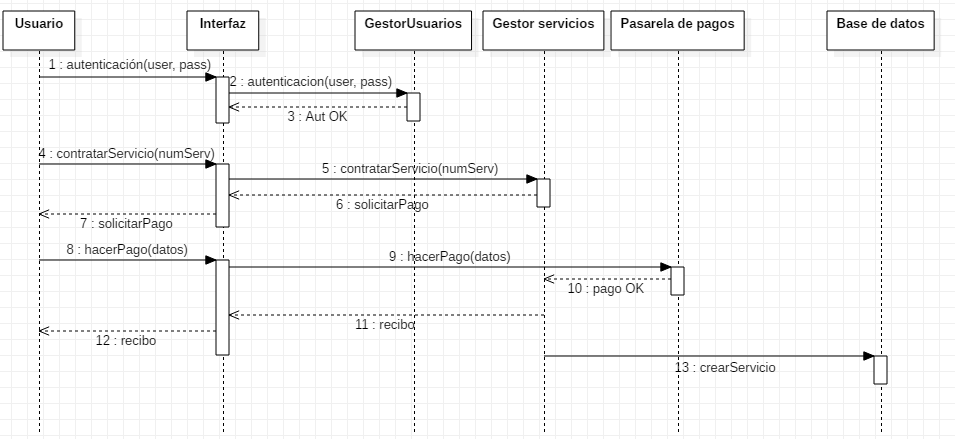
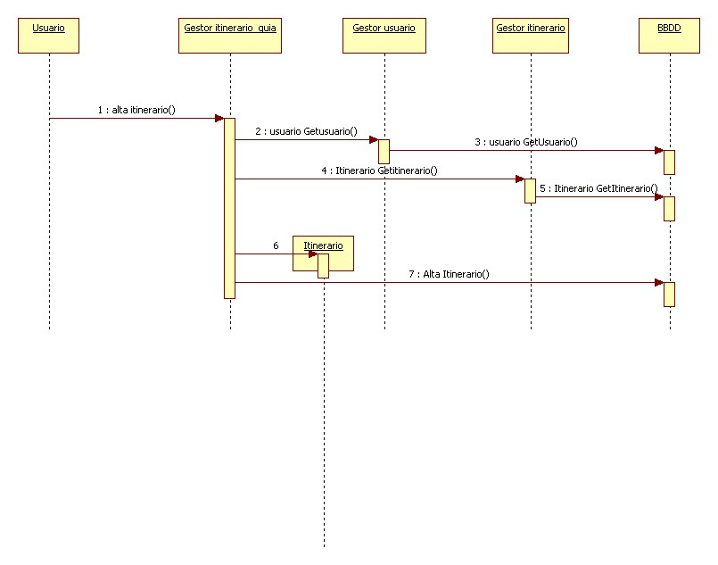

Los diagramas de secuencia son herramientas útiles para visualizar la interacción entre diferentes objetos o actores en un sistema. Se utilizan comúnmente en el desarrollo de software para modelar flujos de trabajo, secuencias de mensajes y la colaboración entre objetos.
Paso 1: Identificar los participantes
El primer paso es identificar todos los participantes que interactúan en el escenario que desea modelar. Los participantes pueden ser objetos, componentes, actores externos o incluso sistemas completos.
Paso 2: Definir las interacciones
Para cada participante, identifique las interacciones que tiene con otros participantes. Las interacciones se representan típicamente como mensajes que se envían entre objetos.
Paso 3: Dibujar el diagrama
Utilice una herramienta de diagramación o simplemente dibuje a mano para crear el diagrama de secuencia. Incluya los siguientes elementos:
- Líneas de vida: Represente cada participante como una línea vertical que se extiende a lo largo del tiempo.
- Marcos de activación: Indique el período de tiempo en que un participante está activo mediante una barra horizontal que se superpone a su línea de vida.
- Mensajes: Represente cada interacción como una flecha que va desde el participante emisor al receptor. Etiquete cada flecha con el nombre del mensaje.
- Llamadas a métodos: Las llamadas a métodos se representan como flechas punteadas que se originan en la línea de vida del objeto que llama y terminan en el objeto que se llama.
Paso 4: Agregar detalles
Para cada mensaje, puede agregar más detalles, como:
- Nombre del mensaje: Un nombre descriptivo para el mensaje.
- Parámetros: Parámetros que se pasan con el mensaje.
- Retorno: Valor de retorno del mensaje.
- Condición: Condición que debe cumplirse para que se envíe el mensaje.
Paso 5: Revisar y refinar
Revise el diagrama de secuencia para asegurarse de que sea preciso, completo y fácil de entender. Busque comentarios de las partes interesadas y realice los cambios necesarios.
Ejemplo de diagrama de secuencia de la funcionalidad contratar servicio

Ejemplo de diagrama de secuencia para gestionar itinerario
